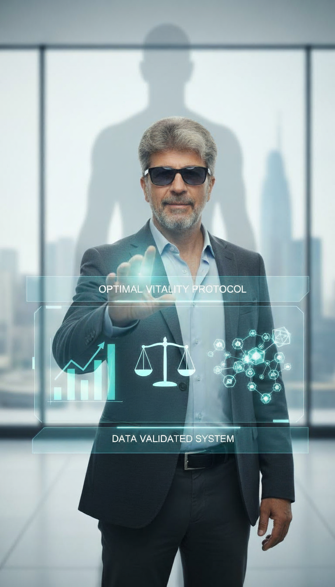
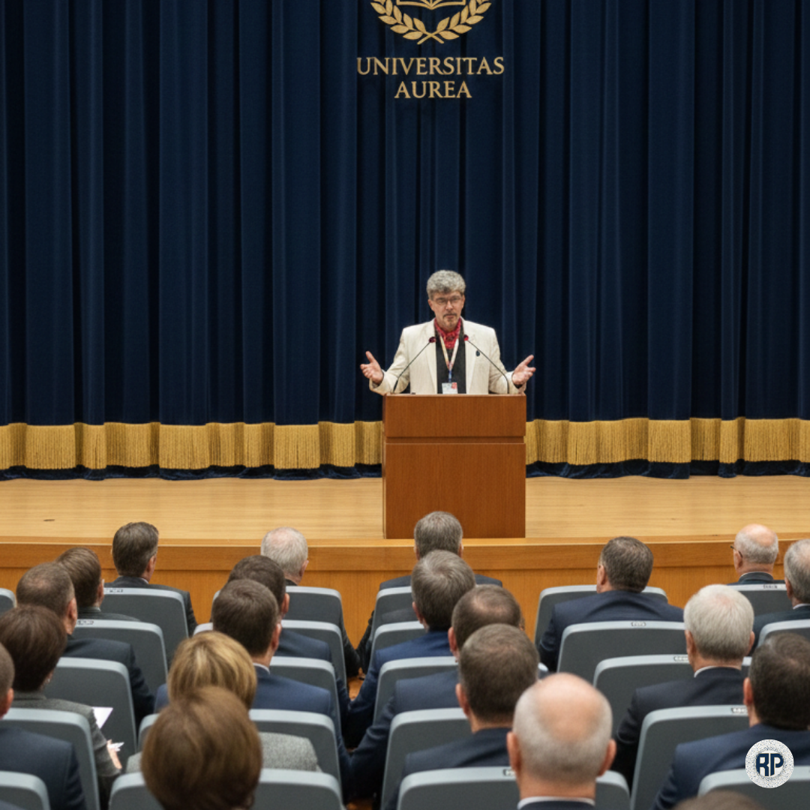
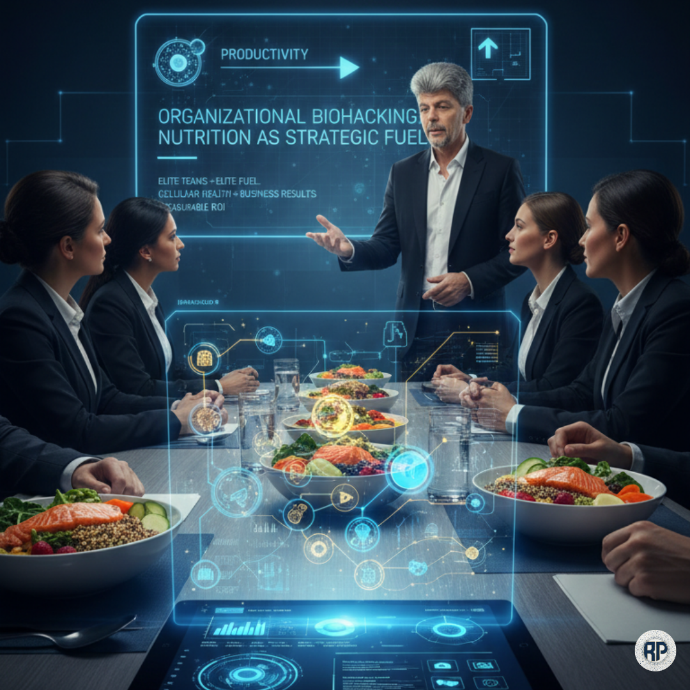
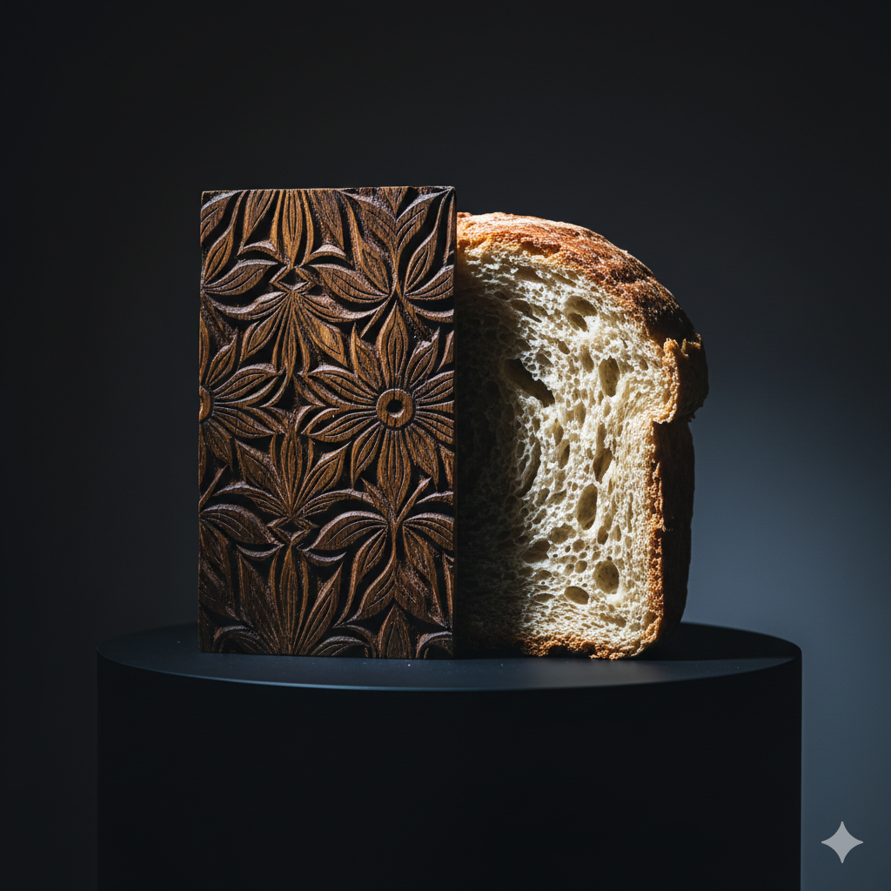
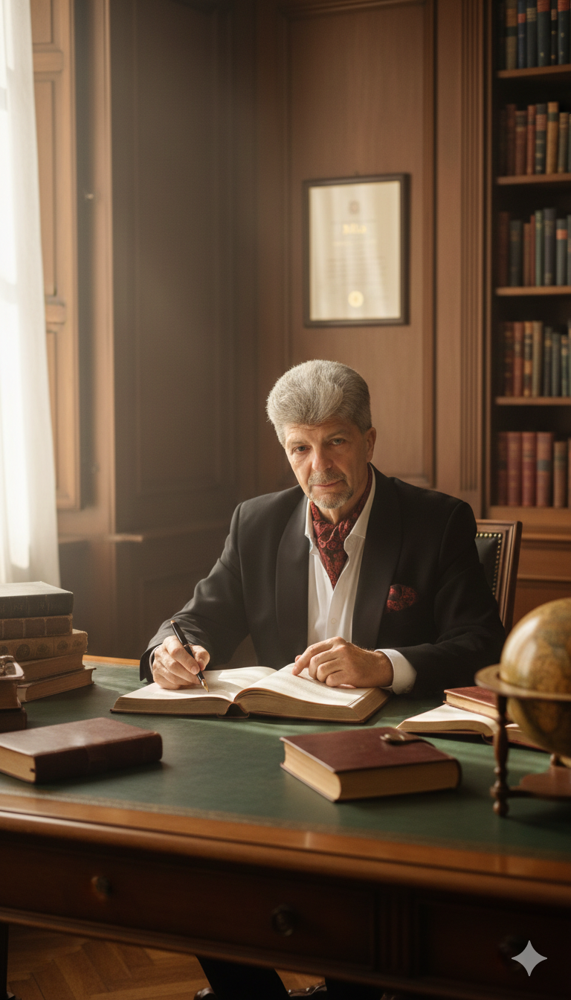

Sustainable Performance is not a happy accident, but the result of flawless decision-making architecture. With over 25 years of expertise, I integrate systems management rigor with bio-nutrition science.


The foundation of all my professional activity is built on process engineering (educational and administrative). For more than ten years, I have coordinated the evaluation architecture for dozens of academic programs and numerous specific processes.
My approach is eminently analytical, based on data processing (Data-Driven Decision Making) and translating macro-strategic visions into tangible operational procedures that deliver predictable results.
Biological optimization requires data, not assumptions. Through metabolic reprogramming protocols, I address the unique needs of those who refuse mediocrity.
The Project NutriSib Transcends the concept of conventional "diet." It is an ecosystem of nutritional intervention based on applied biochemistry, built from personal experience (over 50 kg lost) and engineering rigor. Each intervention plan is a unique matrix, designed to restore homeostasis and reduce cellular inflammation.
NutriSib integrates personalized nutritional consulting, metabolic education, and biomarker monitoring for sustainable results. I don't promise miracles — I deliver a systematic process, validated through results.

The health of an organization begins at the cellular level, in the biochemistry of its employees. Elite teams require elite fuel. I translate nutrition science into practical tools for the business environment.
I implement corporate wellbeing programs that not only reduce absenteeism but transform team energy into a real lever of productivity. The concept is also validated through the Biohack & Wellbeing Club, developed in partnership with Casa de Cultură a Studenților Sibiu — 16 sessions of functional nutrition, behavioral psychology, and biohacking, for students, professionals, and the curious.
I coordinated and ensured maintenance for strategic portfolios with cumulative budgets in the millions of euros (PHARE instruments, POSDRU, Swiss grants). I worked in multicultural environments, from Hungary to Cambodia.
True innovation appears at the intersection of disciplines. I scientifically decipher cultural heritage through unique projects and ideas, demonstrating through nutritional calculations and anthropological analysis that tradition represents a form of metabolic intelligence relevant to the biological optimization of contemporary humanity.
As an Accredited Training Expert with Over 25 Years of Experience in Adult Training and Development, I Apply Andragogy Principles to Build Training Experiences that Generate Real Behavioral Change.
I Am the Founder of Avans Proiect Association (AVAPRO), a Non-Profit Organization Dedicated to Building Real Bridges Between Education, Culture, Health and Socio-Economic Realities. We Support Harmonious Development of Individuals and Communities Through Innovative Projects, Partnerships and Interventions with Real Impact.

In a Market where Credibility is Built Before the First Meeting, Your Digital Presence is Your Permanent Business Card. I Design and Implement Professional Websites, SEO-Optimized, Dedicated to Specialists who Need a Digital Image at the Level of Their Expertise.
The Foundation on Which I Build Practical Solutions is Validated Through Rigorous Academic Research. I Am a Doctor of Engineering with Research Focused on Integrated Management Systems.
I Have Published Books and Works in Project Management, Quality Management, Human Resources Management, Waste Management, Educational Management. These Works Guarantee Scientifically Grounded Methodology, not Just Empirical, in Any Consultancy Endeavor.
I Am Passionate About Systems, People, Nutrition and I Apply All My Knowledge in Integrated Multidisciplinary Approaches!

Success Requires Strategy, not Just Action. By Defining Together the Architecture of Your Future Project, We Ensure Sustainable Performance.
contact@radupascu.online
0723-274.206
Sibiu, Romania